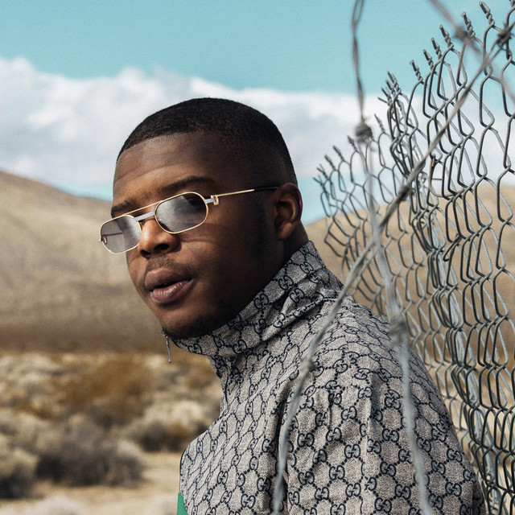

Histoire du Rap français :
Le rap français, est un courant musical qui est aparue en France au milieu des années 1980 et qui s'est popularisé dans les années suivante avec l'apparition de groupes de rap comme IAM, Suprême NTM, Sniper, Fonky Family, Lunatic ou de rappeurs comme MC Solaar et Oxmo Puccino.
Classement des 10 rappeurs francais :
Voici un classement des 10 meilleurs rappeurs fait selon le nombre de ventes et de vues de chaques artistes par rapport à leurs albums entre 2019 et 2020.
10. SCH

Rooftop, quatrième album de SCH, selon les premiers chiffres "midweek", le rappeur d'Aubagne a écoulé 13 998 exemplaires de son album, en seulement 3 jours. En le détail, il a été écouté 60% de la totalité en streaming, 32% en ventes physiques et 8% en digital.
9. Maes

Les Derniers Salopardcompatibilisent 38 536 en une semaine, soit plus en détail, 4 465 ventes physiques, 914 téléchargements et 33 157 en streaming. Distant, en feat avec Ninho, est le single le plus écouté de son album comptant près de 26 millions d'écoutes sur spotify.
8. Koba LaD

Le début d'année 2019 était celui de Koba LaD, quelques mois après son premier album VII qui s'est vendu à plus de 100 000 ventes (sur le long terme), le rappeur du 91 a annoncé L'Affranchi. En une semaine, Koba a réalisé 10 325 ventes. Dans le détail cela correspond à 1 197 en physique, 383 en digital et 8745 en équivalent de streaming. Le son le plus streamé est RR 9.1 en feat avec Niska, qui comptabilise plus de 45 millions d'écoutes.
7. Vald

Avec Ce monde est cruel, qui s'est écoulé à 41 794 ventes en première semaine, dans le détail, Vald a fait plus de ventes en physique qu'en streaming: 22 025 ventes physiques, pour 17 366 en streaming et 2403 téléchargement. Vald à été d'ailleurs certifié disque d'or.
6. JUL

Le vendredi 6 décembre, C'est pas des LOL a fait un carton dans le top albums avec près de 37 000 exemplaires écoulés dont près de la moitié en physique, soit plus en détailles 17 459 ventes physiques, 17 712 en streaming et 1 822 téléchargements. Le projet a été couronné d'un disque de platine. Le son le plus écouté de cet album est Ibiza comptant 7 millions d'écoutes sur spotify depuis.
5. Niska

Mr Sal, s'est écoulé 40 964 exemplaires en première semaine, dans le détail, l'album s'est écoulé à 8563 en physique, 30 369 en streaming et 2043 en digital. Avec ce score, il est déjà proche du disque d'or, qu'il devrait décrocher sans trop de problème la semaine prochaine.
4. Damso
Sorti le 15 juin 2018, Lithopédion, est certifié triple disque de platine. Il cumule désormais 305 400 ventes. Damso, c'est en effet plus d'un million d'albums vendus avec ses trois projets Batterie Faible, Ipséité et Lithopédion qui comptabilisent chacun 125 000, 550 000 et 335 000 ventes, en moins de 4 ans.
3. Ninho
Sortie le 22 mars 2019, « Destin » de Ninho comptabilise 50 120 ventes dès la première semaine. Il a récemment dépassé les 300 000 ventes depuis, et a été certifié triple disque de platine. Ninho réalise le million des ventes avec tout ses albums cumulés, "M.I.L.S." (2016, 100 000 ventes), le volume 2 de la mixtape (2018, 200 000 ventes), l'album "comme prévu" (2017, 400 000 ventes).
2. PNL

Sortie le 22 mars 2019, après 3 jours, l'album s'était écoulé à plus de 74 000 ventes et deux jours plus tard il comptabilisait plus de 100 000 ventes. Au total, l'album s'est vendu à 113 214 ventes en 7 jours. 8 mois après la sortie de leur troisième album, PNL vient d'atteindre la barre incroyable des 400 000 équivalents ventes. Les deux frères rejoignent Nekfeu et Les étoiles vagabondes qui a franchi 400 000 ventes il y a quelques semaines. (Ce sont les seuls rappeurs français à avoir vendu plus de 400 000 exemplaires de leur album en 2019).
1. Nekfeu

Le rappeur a dépassé les 10 000 ventes pendant 15 semaines consécutives En six mois. Avec près de 440 000 ventes pour son album Les étoiles vagabondes, Nekfeu a dominé le rap français, ce qui lui obtient le titre de plus grosse vente de l’année. Les étoiles vagabondes devrait être certifié disque de diamant au courant de l’année 2020.